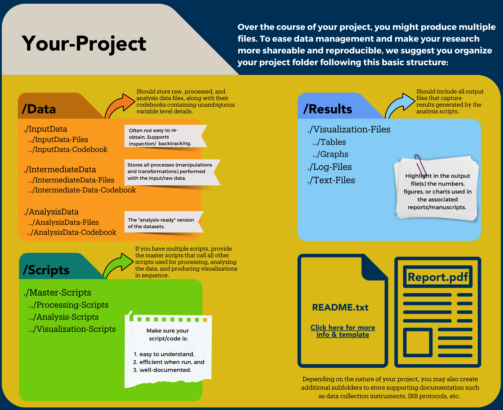
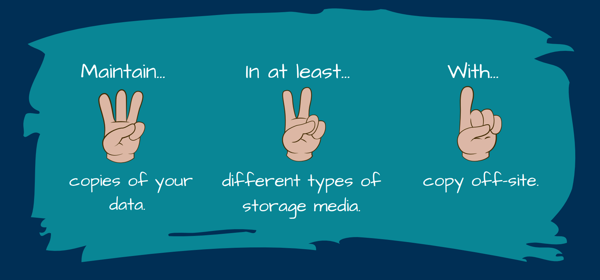
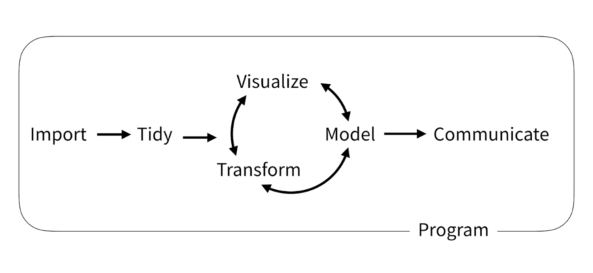

Managing your data
While actively working on your project, there are several practices that can help you to manage your data in an efficient manner that will help you to collaborate with others (including your future self!) and make your work more reproducible.
Track your data sources
As you collect your data, if using pre-existing data sources, we strongly recommend that you keep track of where/by whom you accessed the data you will use. It can be a link to a data archive, an official agency website, or the contact information of a person. This data log can be developed using a spreadsheet that you can share with your team. The goal here is to make sure you can:
- Go back to the original source and the right version of the data
- Correctly attribute/cite the data sources when you project
- Reach out to data creators and ask for potential clarifications you might need to correctly interpret the data
- Inquiry for any data updates at a later date
Keep raw data raw
During the data collection phase, also make sure to create a dedicated folder to save the raw data version you just acquired.
If you are using a programmatic approach to acquire your data (e.g., API), make sure to only read the raw data and save any processed intermediate data products in a different folder. We recommend changing the permissions on your raw data folder to read-only to avoid any unexpected incidents.
If you are accessing the data using a Graphical User Interface (GUI), we recommend you create a “working copy” of your raw data in a separate folder and use those files as it is often very easy to accidentally overwrite it.
Project organization
We recommend encapsulating your project into one folder. It will make it more portable when combined with a relative path and help you keep the information centralized in one place. Here is a starting point for your file structure with three subfolders:
- Data: where you will store your data with the following file structure
- Input_data: to store the raw data you collected or/and are reusing
- Intermediate_data: to store any cleaned or merged data sets
- Analysis_data: any model analytical outputs that you computed
- Code or Scripts: you can store your scripts in this folder. You can keep everything within the folder using filename to organize it or create subfolders as needed
- Results: to store tables, graphs, reports, or any other scientific products you are producing
In the top-level folder, we also recommend you write a README to explain your project, list the contributors and provide information on how to best navigate your project folder as well as a short description of the files it contains.

Of course, each project is different, so adapt these recommendations to your own project needs!
Adopt a consistent naming convention
Develop naming conventions for files and folders:
- Avoid spaces (use underscores or dashes)
- Avoid punctuation or special characters
- Try to leverage alphabetical order (e.g., start with dates: 2020-05-08)
- Use descriptive naming (lite metadata)
- Use folders to structure/organize content
- Keep it simple
- Make it programmatically useful:
- Useful to select files (Wildcard *, regular expression)
- But don’t forget Humans need to read file names too!!
- Tip: leverage the use of
_and-to make your filename readable by both Humans and machines!
Try it:
Which filename would be the most useful?
06-2020-08-sensor2-plot1.csv2020-05-08_light-sensor-1_plot-1.csvMeasurement 1.csv2020-05-08-light-sensor-1-plot-2.csv2020-05-08-windSensor1-plot3.csv
Remember, the most important is to make it consistent!
A good reference on this topic from Jenny Bryan (Posit).
Backup your data
Don’t forget, things happen!!!
To protect yourself against data loss, we suggest you backup your data following the 3-2-1 rule:
- Maintain 3 up-to-date copies of your data
- In 2 different storage solutions
- with 1 copy being off-site or in the cloud

As a UCSB affiliate, you can access cloud storage solutions such as Google Drive and Box and other departmental computing and storage resources. Check with your departmental IT Team!
Making your work more reproducible
Analytical workflows
Building analytical workflows or data pipelines empowers you to iterate more quickly and integrate new information more easily. Say goodbye to copy-paste!! It also enables others to build on your work. Your research is important – but arguably only when others can find it, make sense of it, and build from it. You’re constantly collaborating and, most importantly, with your Future self!. Develop your workflows in a mindset geared towards collaboration. ***Workflows are rarely linear!

Workflows are rarely linear! They are developed iteratively, and one of the most helpful things you can do is talk about them with your research team.
Code
One great way to build such workflow from raw data to scientific outputs is to use scripts and leave copy-pasting behind. Here are a few things to consider:
- Comment your code…too much is not a thing
- Notebooks like Jupyter and RMarkdown can help you to be more explicit by integrating outputs/results along with your code
- Keep things in sync in a centralized place online to avoid duplication (data, scripts, code…)
- Centralize your data in shared computing resources or data repositories
- Use version control software (e.g., Git) rather than your own bookkeeping methods (goodbye
script_JM_03v5b.R) - Code sharing and collaboration using code repository services (e.g., GitHub, GitLab, …)